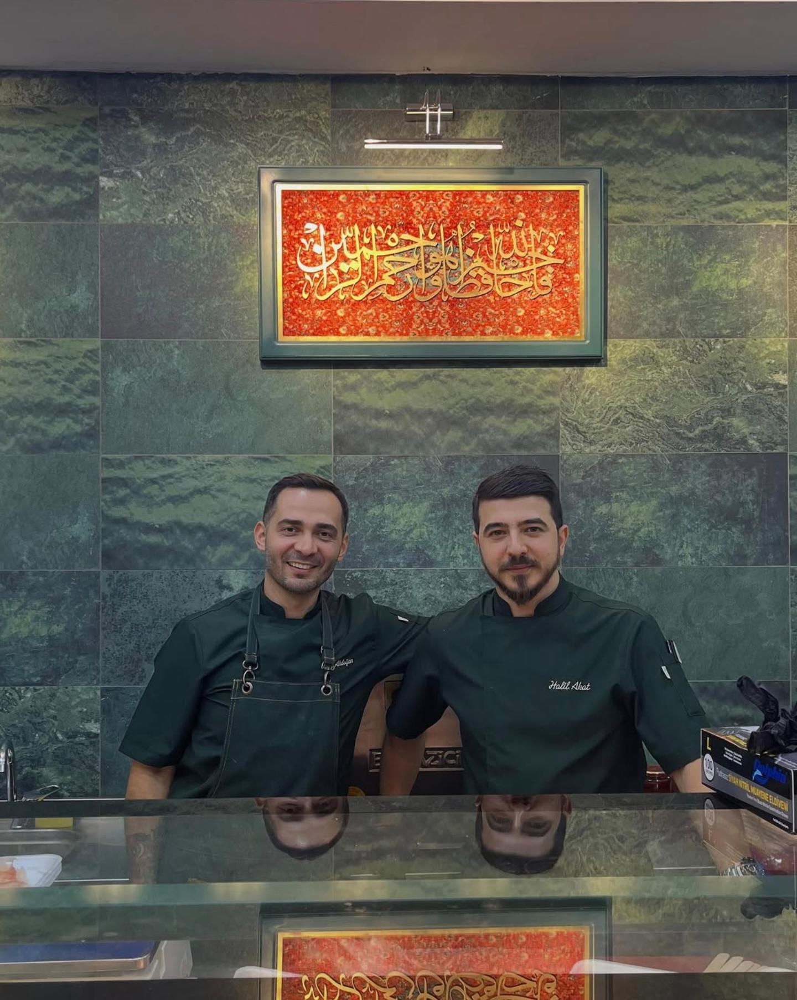

Geleneksel Ustalık & Güven
Oğuz Kasap’ın Doğuşu
Oğuz Kasap, et sektöründe yıllarını lezzete, ustalığa ve kaliteye adamış iki deneyimli ismin güç birliğiyle doğdu.
Sektörün öncü markalarından Coşkun Kasap’ta edindiği 15 yıllık derin tecrübesiyle etin en kalitelisini seçme ve işleme uzmanlığını tezgahımıza taşıyan Oğuz Akdoğan ile baba mesleği olan kebapçılık ve kasaplık kültürünün içinde çekirdekten yetişerek etin lezzet sırlarını ustalığına yansıtan Halil Akat, geleneksel kasaplık anlayışını modern Kağıthane’de yaşatıyor.
Tezgahlarımızda her gün titizlikle hazırlanan %100 yerli besi ürünlerimizi; hijyen, dürüstlük ve helal kesim ilkelerinden ödün vermeden sunuyoruz. Bizim için kasaplık sadece bir iş değil; sofralarınıza güven, lezzet ve yılların birikimi olan gerçek ustalığı taşıma sorumluluğudur.
